间接解密
分析数据加密的过程中，很多情况下我们是会碰到难以复现的情况（例如混淆和函数套用），不管是Windows下还是Linux下都是比较难搞的，但是我们有的时候可以通过一些特殊的手段进行数据的解密。
下面我会有钱入深的给大家介绍如何进行间接解密。
Windows平台
从简单的开始，所以我就先用Windows下的win32程序进行一个剖析。
方法剖析
简单的写一个注册码的小程序，我们就是要来偷取他的算法。
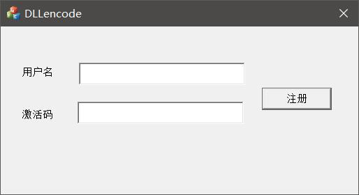
就是输入用户名和激活码来判断是否是我们的用户，我们用OD附加（用我写的那个Wker_EXEDebug也可以），然后搜索一下错误字符串，然后我进入这个验证函数。
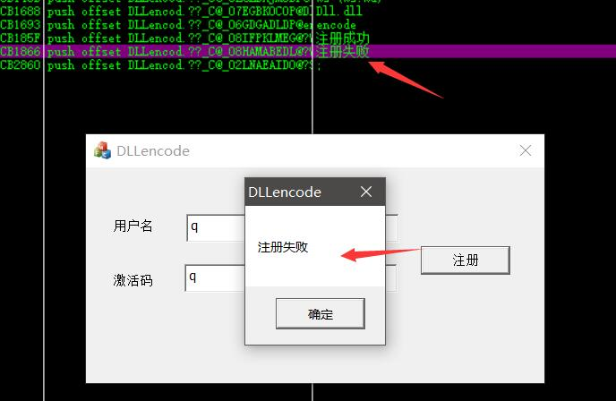
我们进入这个函数，看一下附近的代码：
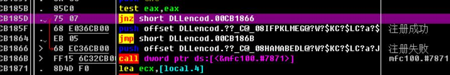
看到这个跳转之后，我们往上看，在我们的程序入口下断，然后输入错误密码，往下跟，注意寄存器的值，观察我们输入的内容被压入堆栈之后：
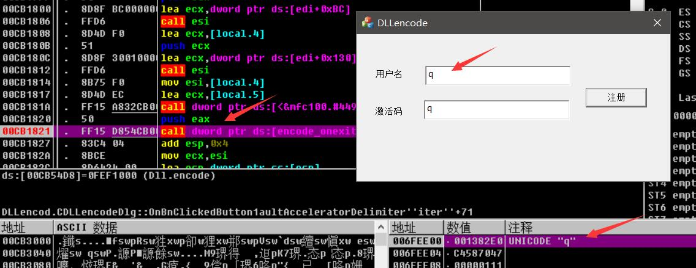
可以看到这个按道理来说就是我们的加密函数，所以我们跟进去，可以观察到我们进入了Dll.dll程序的领空，我们记下函数的入口地址：0xFEF1000，然后观察这个模块的基地址：0xFEF0000
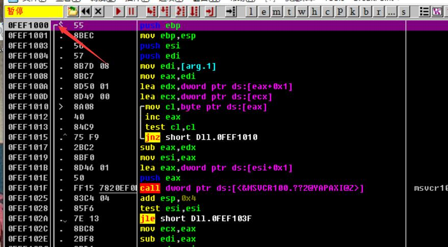
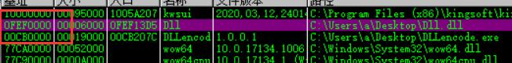
计算出相对的偏移地址：0x1000，注意是十六进制。
我们简单的分析一下，这个程序是通过加载其他的DLL执行相对应的加密函数来得到加密的字符串，所以我们的思路来了，我们调用他的加密函数，来写一个简单的注册机。
在这之前我们还需要分析一下函数的一个定义。
函数进入的时候堆栈只压了一个参数，并且是一个四字节的参数，并且是一个字符地址，并且使用的是ASCII码的编码方式，所以极大概率是char*的一个指针，参数我们确定了接下来我们就需要来确定函数的调用约定，来到返回值部分：
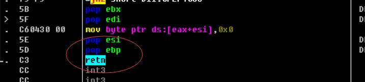
1 | 0FEF103E |. 5B pop ebx ; DLLencod.00CB1827 |
可以看到是我们外部进行的堆栈清理操作，并且我们跳出函数来看他是如何清理堆栈的：
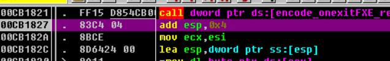
可以看到是通过增加ESP的值来实现堆栈平衡的，所以基本上可以确定是使用的C++编写的函数，并且函数是使用的__cdecl的调用约定，而并Windows的__stdcall调用约定。
知道这些之后，我们就可以来通过实践来偷取他的加密函数。
最终我们可以得出函数原型：
1 | typedef char*(__cdecl *lpencodefun)(char*); |
注册机编写
既然我们知道函数地址是相对模块基地址的0X1000的偏移位置的，并且我们也判断了对应的函数调用方式，所以接下来的操作，就很简单了，我们脱出他的DLL，给我们自己用，传入我们想要注册的用户名，最终得到我们的注册码，实现代码：
1 |
|
首先我们放上我们的函数定义（__cdecl默认可以不加），然后加载注册程序的DLL，最终加上我们的偏移量：0x1000，得到真正的加密函数，最后注册成功：
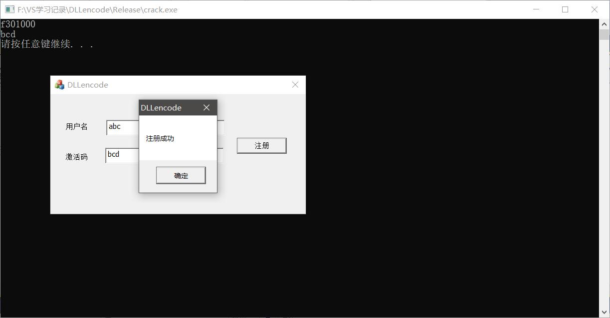
这种是根据DLL进行间接加密，其实即使他不用DLL，我们一样可以，远程调用函数就好，就和我们平常写外挂用到的CALL一样的，无非最后我们截取他的eax值就可以了（前面推断出他是C++写的），其实这种方式最好是用DLL注入配合上DbgView是最好的，HOOK的话呢有点本末倒置了，与我下面的思想有点冲突了，所以我就不举例了。
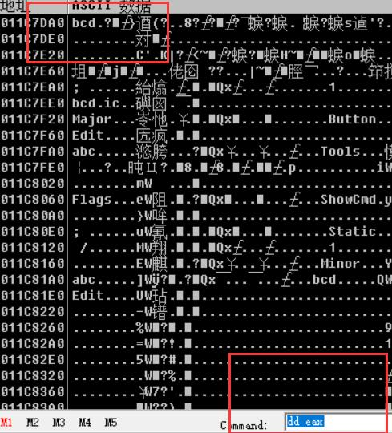
Android偷取加密算法
其实说是Android下的，但是一般下我们需要进入到so层进行加密算法的窃取，我用一个实例去讲解我上面所写到的思想：
抓包
前两天做安卓的爬虫，去分析加密的时候一个实例，APP是一个读小说的程序
我们使用FD去抓包（Charles不是很方便抓这些），抓到的包：
1 | as=ab9aacee485e79df9e9aac&mas=01999323139999f9b9b9a379b945a1c446f9b9b9a399a35919a3d3 |
这个只是封包的一部分，为了不增加文章的难度，其他的数据就不列出了，使用反编译APP去分析他，最后在重重翻找之下，终于找到了对应的java层的代码，很是让人兴奋：
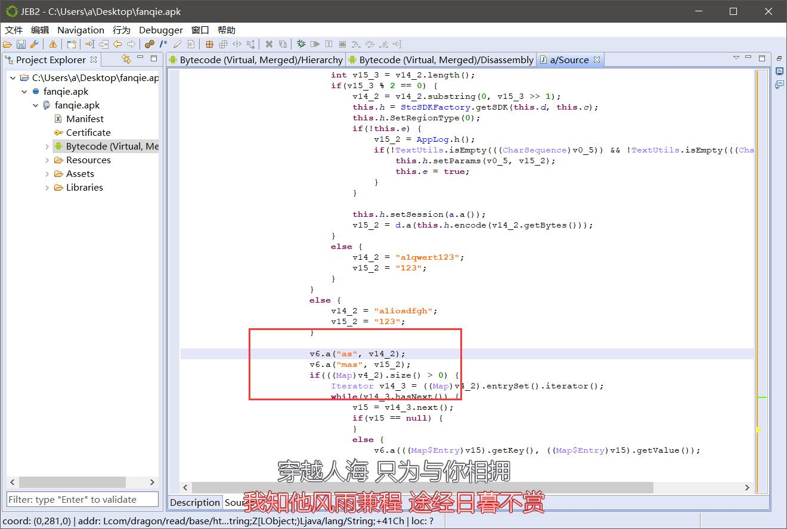
java层的分析还是相对而言简单一些的，所以我们往上看
1 | v15_2 = v6.a(); |
可以分析到，我们的mas和as是通过上面的v14_2和v15_2所赋值的，再往上看，可以看到一大堆的分支，有个分支是等于一个指定的字符串，这显然不是我们想要的，所以最终我们可以确定为我们的mas的计算算法：
1 | v15_2 = d.a(this.h.encode(v14_2.getBytes())); |
这个时候发现我们的mas是通过as计算出来的，在这里我们不进行as的计算，否则文章会实在太长了（算法很复杂），这里只进行mas的计算。
mas是通过d.a这个方法进行计算的，虽然混淆很严重，但是分析起来还不是很烦，跟进这个a方法。
1 | static { |
看到他又是调用了另外一个d.a进行计算的，我们再来跟进去看。
1 | public static String a(byte[] arg9, int arg10, int arg11) { |
这下子就很清楚了，一个算法，这个算法虽然点难看，混淆有点严重，但是还是相对而言不难的，并且非常好的一点就是，他居然没有调用外部的函数了，这就很是让人开心。
得出结论，其实也就是调用了最后一个这个函数，通过传入as的byte数组，然后最终返回对应的字符串，是不是很简单，那我们来实践一下，的到最后的执行结果：
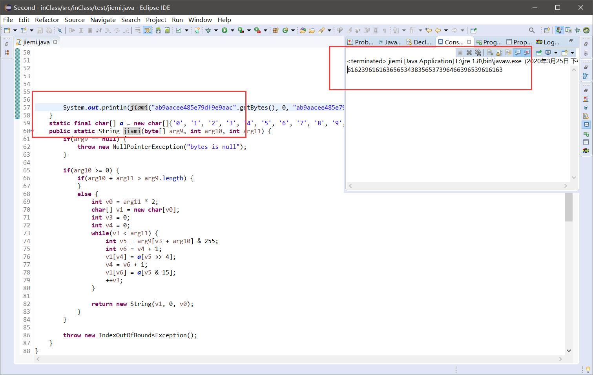
不对啊，和我们之前的那个mas相差很大，根本就是不一样，那么我们是哪里出错了？
仔细观察发现：
1 | this.h.encode(v14_2.getBytes()) |
他传给a的是一个编码之后的byte数组，这下子了解了，那么我们继续跟踪这个h方法，跟进去之后发现：
1 | private ISdk h; |
跟进去这个对象发现居然是一个接口：
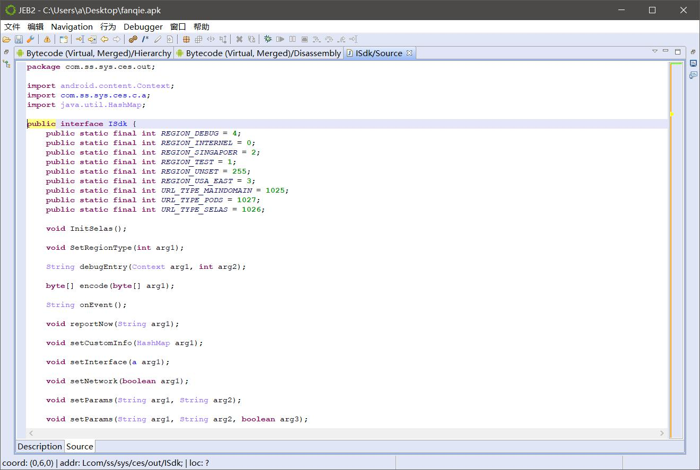
那么没办法，我们只能继续跟踪，看看是到底哪一个实现类来实例化的h变量，最终我们找到：
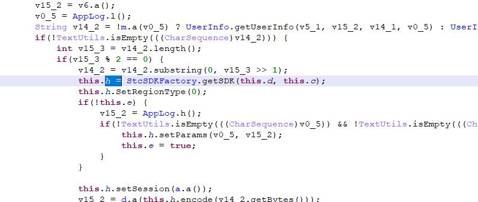
很明显是一个单例的对象，我们来看看这个SDK到底是个什么东西。
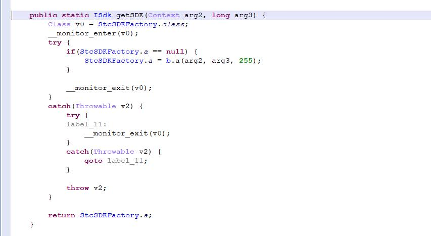
发现最后返回的是a，而这个a是通过b.a来实现的，我们跟进去这个a方法（混淆有点严重大家仔细看），发现返回值是一个b，这就好办，那么我们跟进这个b类：
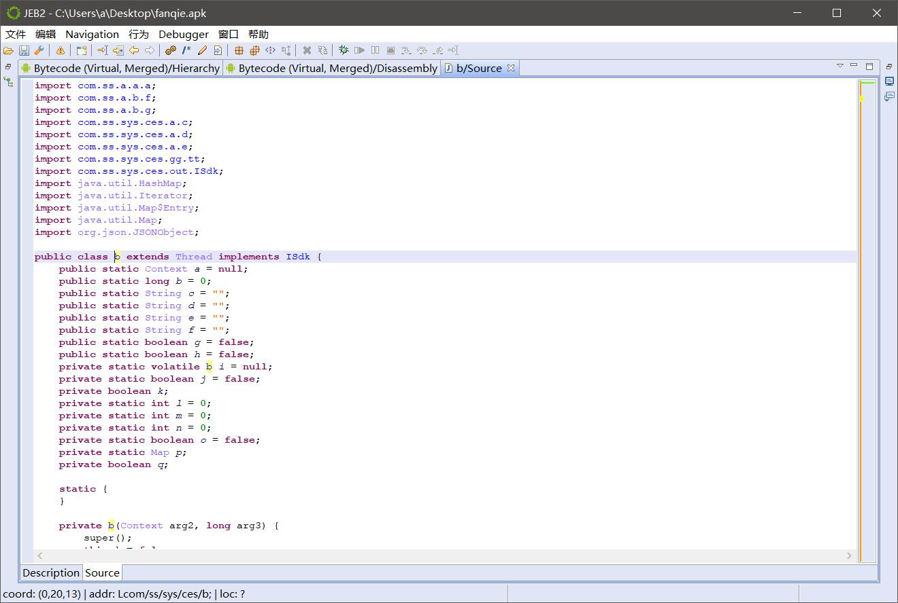
确实是实现了ISdk这个接口，那么我们就来找这个encode的方法：
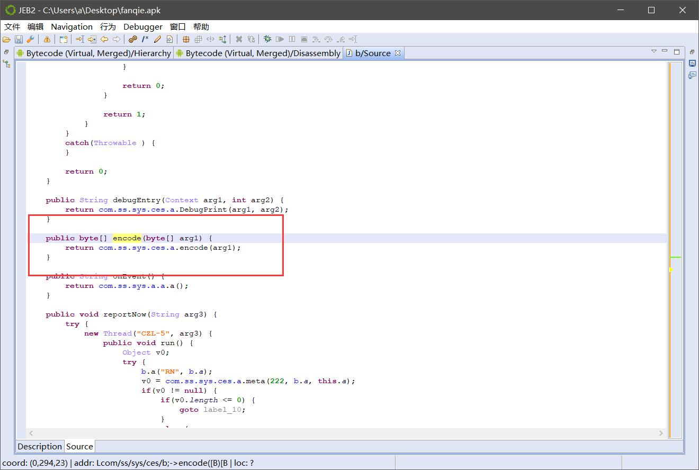
发现居然是另外一个类的方法，那么没办法我们继续跟：
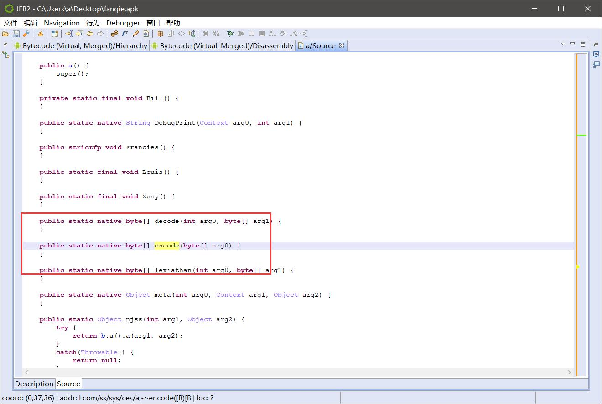
然人心有一点寒，居然是个本地方法，也就是说实现是在Linux的动态链接库so文件中进行实现的，是不是和我在上面说的DLL文件加载是类似，这就是为什么我要在一开始局那个例子，好了，没办法，我们只能硬着头皮来了，找so层加密：
静态代码块中找到了他的so文件：
1 | static { |
是cms这个so文件，我们将它拖出来，放进IDA进行分析：
来到我们的导出表：
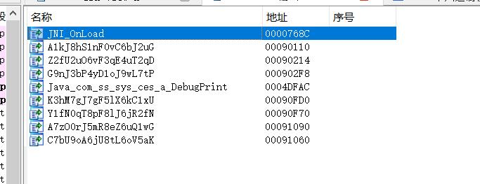
又是混淆加固，那我们来看看是不是动态注册中能找到什么，发现什么也没有，无从下手，只能动态调试了。
但是对于一个参数这样打动干着实在让人觉得有点屈，而且你会发现复现so层的代码有点不现实，那么我们的间接加密的思想就显得尤为重要了。
用魔法打败魔法
这句话说的很好，你的加密坚不可摧，你做的很好，但是我们也不是笨蛋，我们也要想办法解决，既然没办法找出算法，那么只能间接加密，重头戏在下面，也是本文的重点，希望大家认真！
首先我们要模仿他引入我们的so文件：
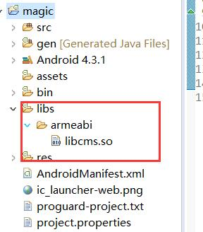
导入之后我们就模仿他在他的那个java包中新建我们的类：
这里需要注意的是，我们的包名和类名要和他的一模一样，就算是混淆，我们也需要一样，然后我们来运行一下看下是否正常：
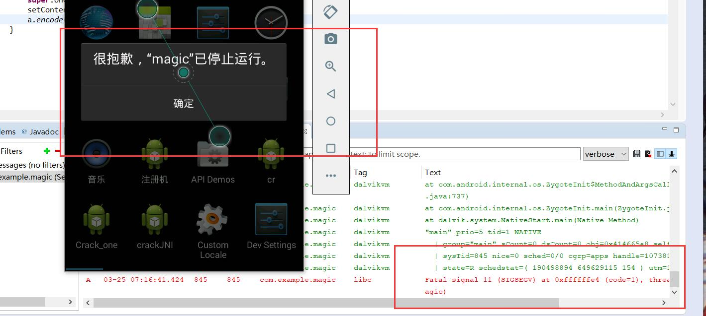
问题来了，Linux的单步执行异常，并且我们毫无头绪，不知道如何是好，代码也没错啊，那到底也是什么问题？当你看到这句异常的时候我可以告诉你，很那解决，并且我还知道你用的是Android5.0以下的模拟器，也就是dalvik的虚拟机，他并不知道该怎么做，其实这里是他的一个解析机制，这里不想详细的去说（会脱壳的应该懂），那么我们应该怎么办，使我们接下来要解决的，我们需要换成ART虚拟机进行纠错，也就是Android5.0以上的版本，他因为是在安装运行的时候是转为OAT这个ELF可执行文件，所以可以给我们异常的具体信息，我们换成高版本模拟器来看下：
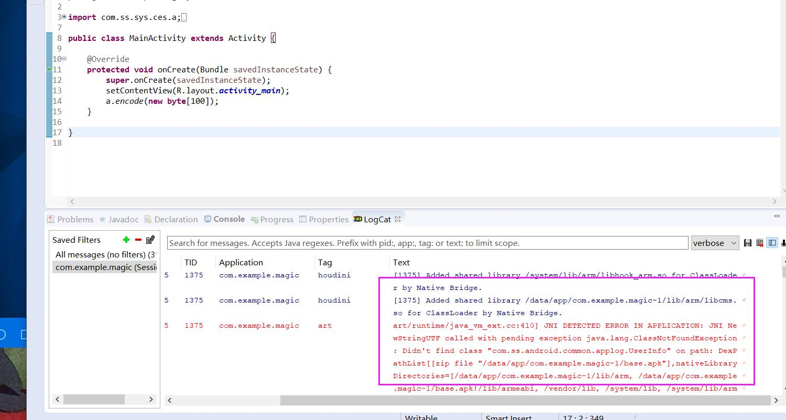
1 | art/runtime/java_vm_ext.cc:410] JNI DETECTED ERROR IN APPLICATION: JNI NewStringUTF called with pending exception java.lang.ClassNotFoundException: Didn't find class "com.ss.android.common.applog.UserInfo" on path: DexPathList[[zip file "/data/app/com.example.magic-1/base.apk"],nativeLibraryDirectories=[/data/app/com.example.magic-1/lib/arm, /data/app/com.example.magic-1/base.apk!/lib/armeabi, /vendor/lib, /system/lib, /system/lib/arm]] |
可以看到关键的异常信息：Didn't find class "com.ss.android.common.applog.UserInfo"
原来是你干的，缺少了一个类，那么没办法，我们只能将这个类找回来，包名都给我们了，就很好办了，最后拷贝得到：
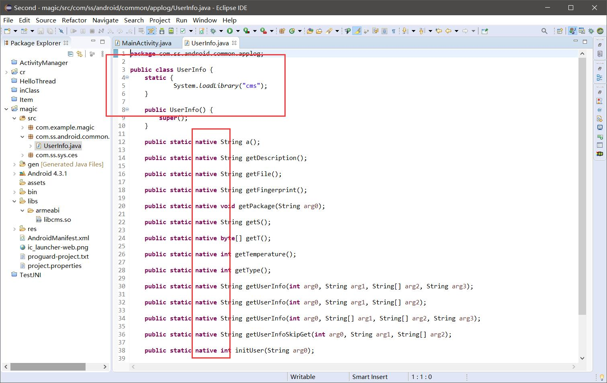
确实，这个类也是这个的一员，我们放好之后，将我们的加密函数也写好，最后进行一个完整的加密：
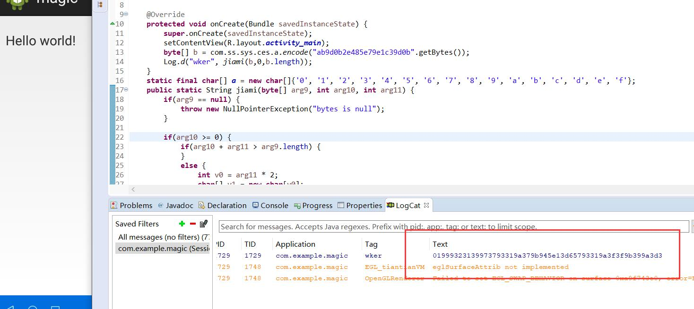
可以看到最终我们得到了我们想要的结果。
总结
我们需要巧用间接引用，在我们的加密过程中是很重要的。